DAIRY MILK
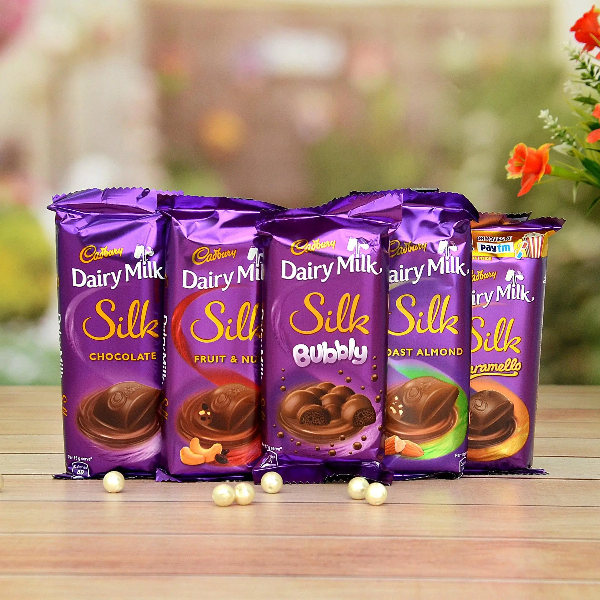
Dairy Milk came to be known for its unique and loveable advertisement with catchy jingles throughout the years, which evolved. The chocolate was associated with the word 'Meetha' (sweet)- a strategy adopted to counter traditional sweets in India.
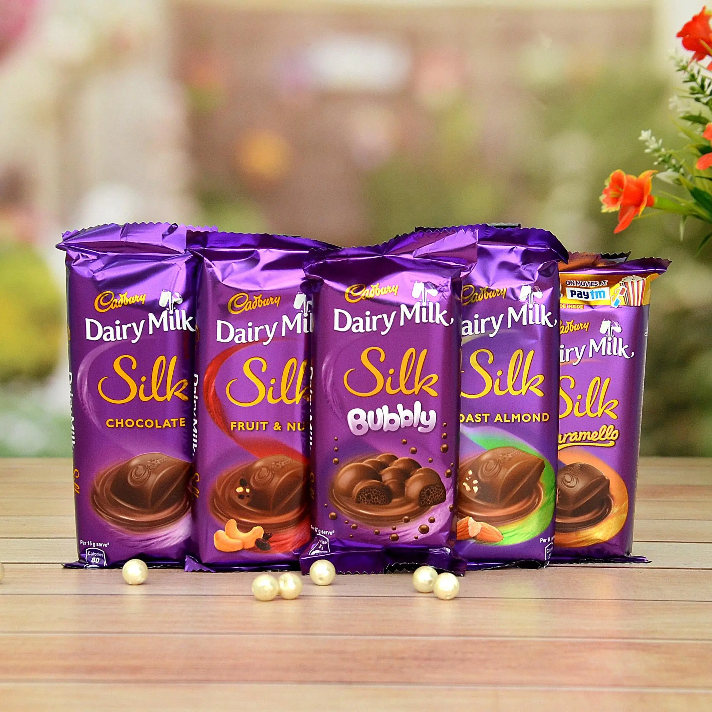
Dairy Milk came to be known for its unique and loveable advertisement with catchy jingles throughout the years, which evolved. The chocolate was associated with the word 'Meetha' (sweet)- a strategy adopted to counter traditional sweets in India.
MUNCH

We cannot give this bar a higher safety rating because of the use of hydrogenated vegetable fats as an ingredient. Hydrogenated vegetable fats are a source of trans fatty acids or “trans-fats”, which are harmful to health. Trans-fats increase the likelihood of heart disease, stroke, cancer and many other ailments.
We cannot give this bar a higher safety rating because of the use of hydrogenated vegetable fats as an ingredient. Hydrogenated vegetable fats are a source of trans fatty acids or “trans-fats”, which are harmful to health. Trans-fats increase the likelihood of heart disease, stroke, cancer and many other ailments.
FIVE STAR
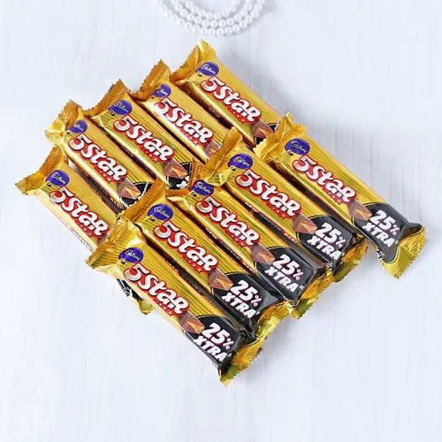
5 Star was launched in India in 1969. In 2016 it was launched in Malaysia and the Philippines in 15g 'mini-bars', 45g standard bars and 150g sharepacks (of 10 mini-bars). It was launched in Brazil the same year but under Cadbury's sister brand Lacta.
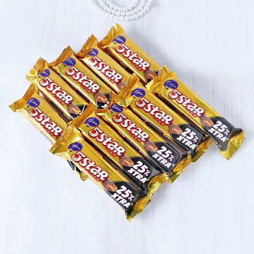
5 Star was launched in India in 1969. In 2016 it was launched in Malaysia and the Philippines in 15g 'mini-bars', 45g standard bars and 150g sharepacks (of 10 mini-bars). It was launched in Brazil the same year but under Cadbury's sister brand Lacta.
HERSHEY'S MILK CHOCOLATE
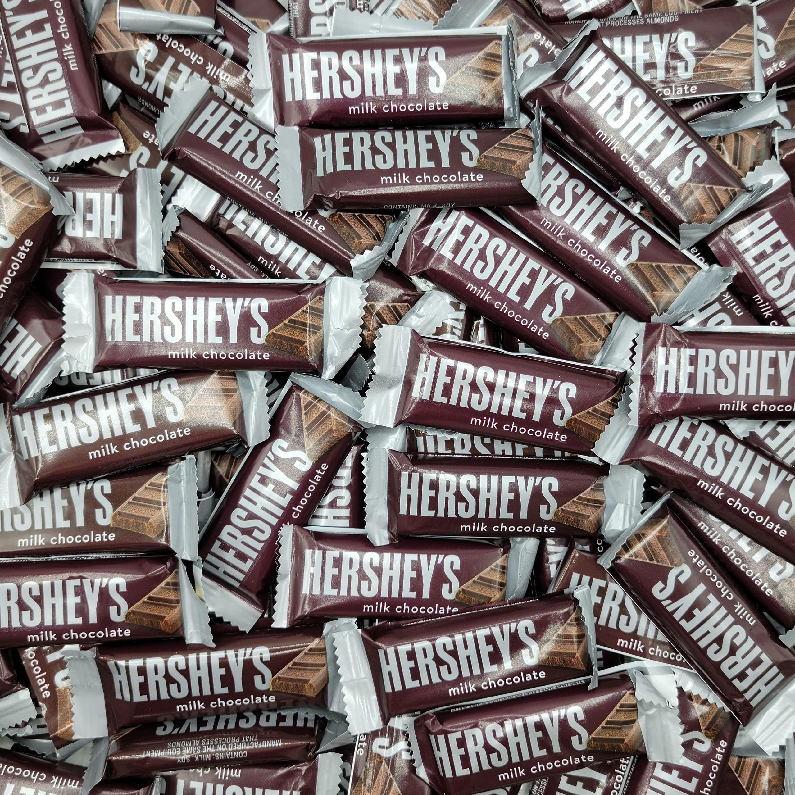
Hershey's has a delicious, unique taste because of the farm fresh milk that is used! HERSHEY'S Milk Chocolate is one of the only milk chocolate brands in the world that still uses fresh milk in its production, giving it a distinctive taste.
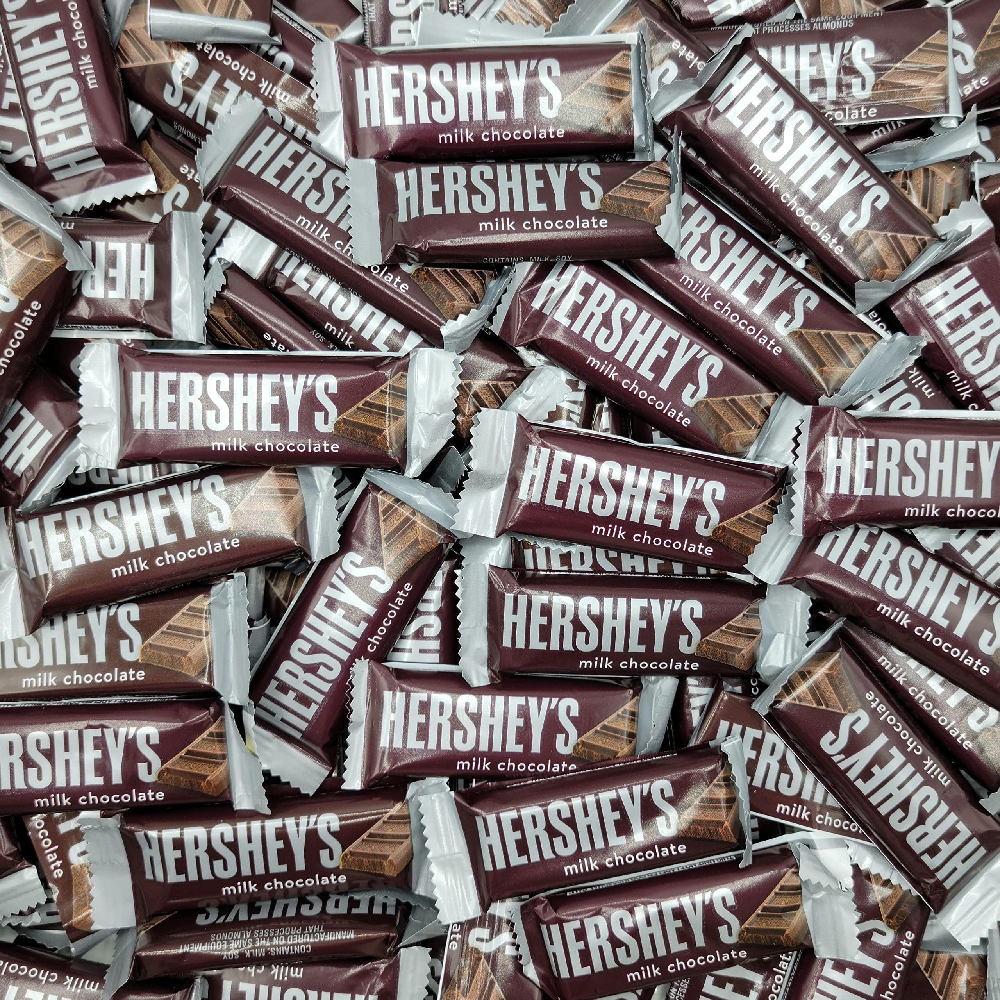
Hershey's has a delicious, unique taste because of the farm fresh milk that is used! HERSHEY'S Milk Chocolate is one of the only milk chocolate brands in the world that still uses fresh milk in its production, giving it a distinctive taste.
CADBURY BOURNVILLE
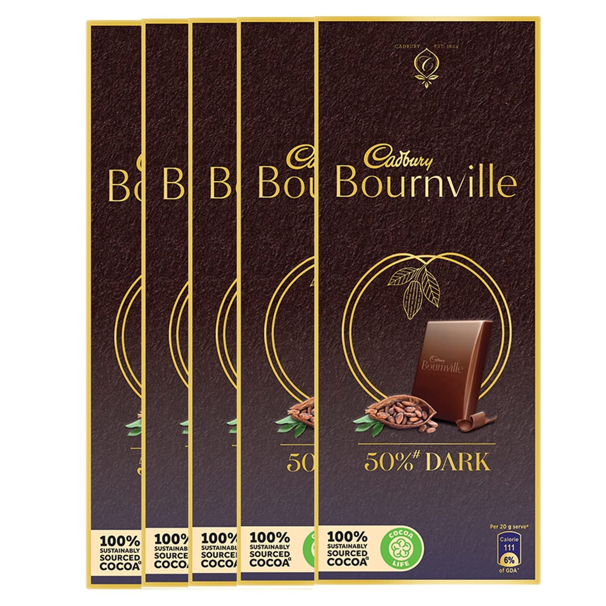
Bournville is a brand of dark chocolate produced by Cadbury. It is named after the model village of the same name in Birmingham, England and was first sold in 1908.
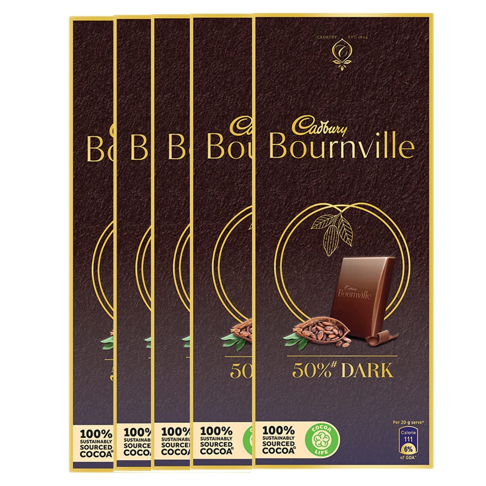
Bournville is a brand of dark chocolate produced by Cadbury. It is named after the model village of the same name in Birmingham, England and was first sold in 1908.
AMUL INDIA DARK CHOCOLATE
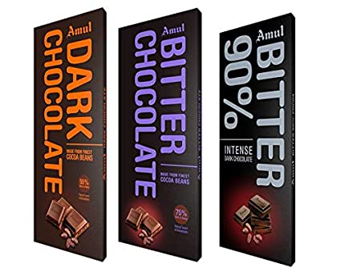
Dark chocolate is loaded with nutrients that can positively affect your health. Made from the seed of the cacao tree, it's one of the best sources of antioxidants you can find. Studies show that dark chocolate can improve your health and lower the risk of heart disease.
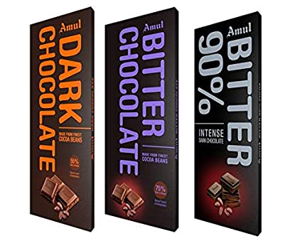
Dark chocolate is loaded with nutrients that can positively affect your health. Made from the seed of the cacao tree, it's one of the best sources of antioxidants you can find. Studies show that dark chocolate can improve your health and lower the risk of heart disease.
SNICKERS PEANUT CHOCOLATE BAR
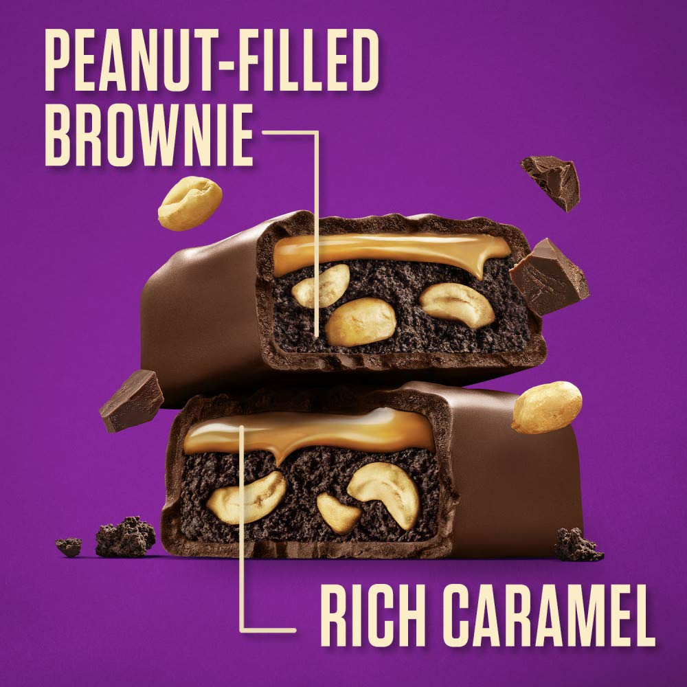
Snickers bar, packed with delicious and nutritious roasted peanuts, also contains nougat and caramel, creating a flavour that's enough to rock your taste buds, while busting hunger pangs between meals.
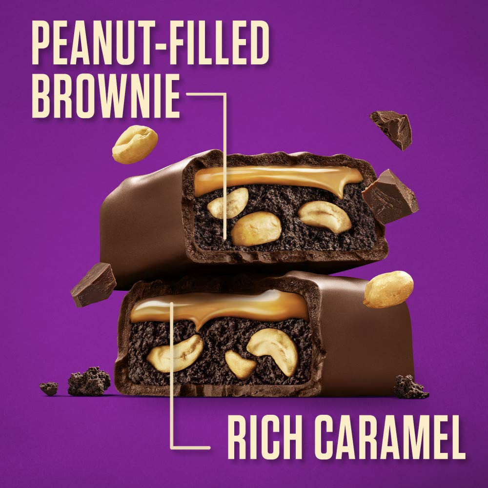
Snickers bar, packed with delicious and nutritious roasted peanuts, also contains nougat and caramel, creating a flavour that's enough to rock your taste buds, while busting hunger pangs between meals.
FERRERO ROCHER
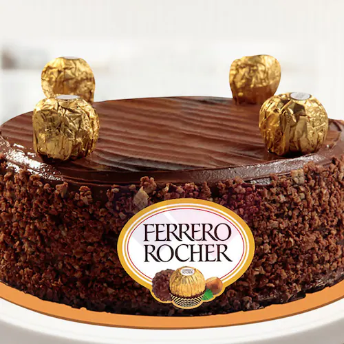
Ferrero Rocher (Italian pronunciation: [ferˈrɛːro roʃˈʃe]) is a chocolate and hazelnut confectionery, introduced in 1982 and produced by the Italian company Ferrero. Michele Ferrero is credited as the product's creator. Each Ferrero Rocher ball is covered in foil and placed into a paper liner. The confection is machine made and much of its production process is designed to be secretive.[1]
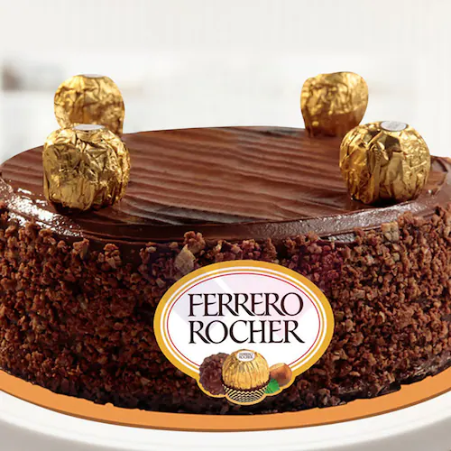
Ferrero Rocher (Italian pronunciation: [ferˈrɛːro roʃˈʃe]) is a chocolate and hazelnut confectionery, introduced in 1982 and produced by the Italian company Ferrero. Michele Ferrero is credited as the product's creator. Each Ferrero Rocher ball is covered in foil and placed into a paper liner. The confection is machine made and much of its production process is designed to be secretive.[1]
NESTLE KIT KAT
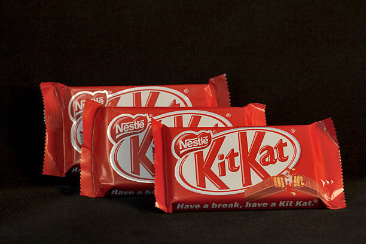
Kit Kat (stylised as KitKat in various countries) is a chocolate-covered wafer bar confection created by Rowntree's of York, United Kingdom, and is now produced globally by Nestlé (which acquired Rowntree's in 1988),[1] except in the United States, where it is made under licence by the H. B. Reese Candy Company, a division of the Hershey Company (an agreement Rowntree's first made with Hershey in 1970).[2]
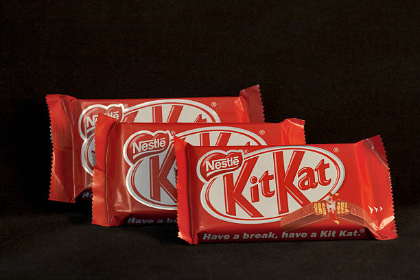
Kit Kat (stylised as KitKat in various countries) is a chocolate-covered wafer bar confection created by Rowntree's of York, United Kingdom, and is now produced globally by Nestlé (which acquired Rowntree's in 1988),[1] except in the United States, where it is made under licence by the H. B. Reese Candy Company, a division of the Hershey Company (an agreement Rowntree's first made with Hershey in 1970).[2]
CADBURY NUTTIES
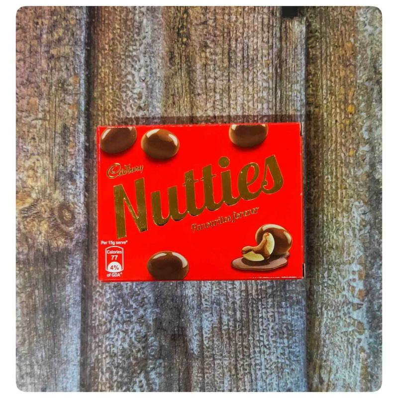
Candied nuts are usually almonds and cashews with a thick chocolate coating. The chocolate melts in your mouth and the crushed nuts in the centre give it the much-needed crunch. Don't give it a second thought try this and give yourself the pleasure of tasting heaven.
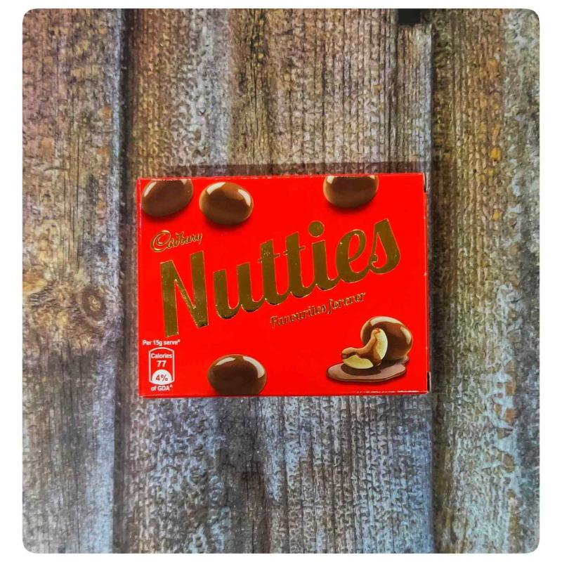
Candied nuts are usually almonds and cashews with a thick chocolate coating. The chocolate melts in your mouth and the crushed nuts in the centre give it the much-needed crunch. Don't give it a second thought try this and give yourself the pleasure of tasting heaven.